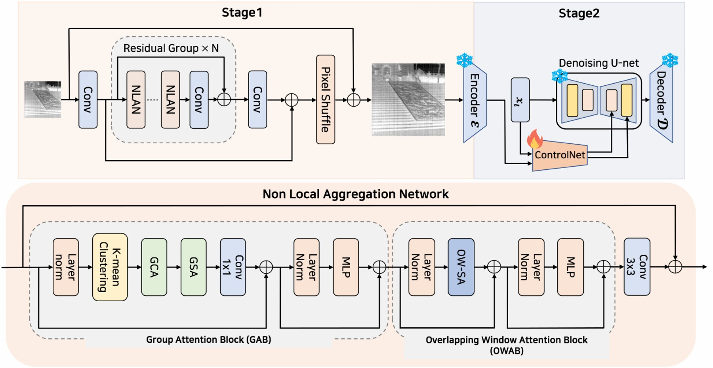
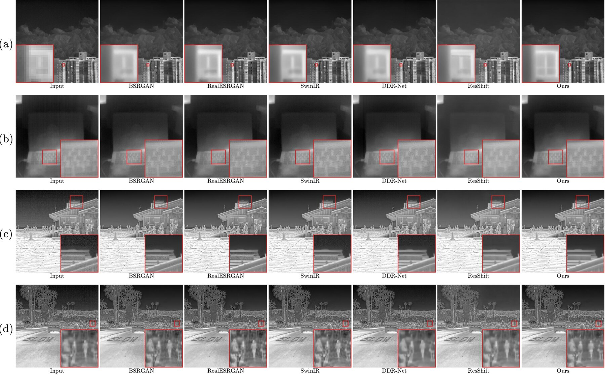
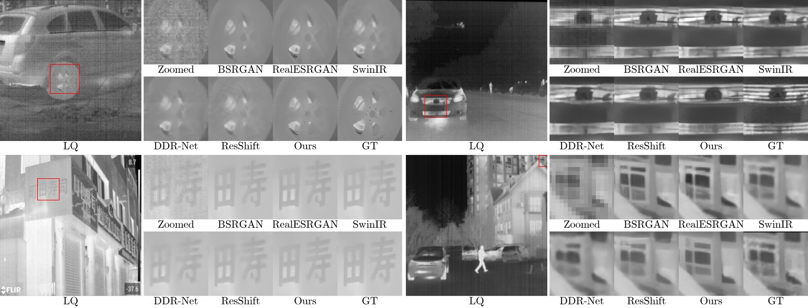

1Yeungnam University · 2DGIST
Real infrared video at ×4. Bicubic upsampling (left) against our restoration (right); frames are processed independently.
Real infrared sensors do not degrade an image the way a bicubic kernel does. Optical blur from the lens couples with Gaussian read noise, fixed-pattern stripe noise from the readout circuitry, and a low-frequency non-uniformity that drifts as the detector heats up. Which of these dominates, and how strongly, changes with the operating environment and the sensor operating time.
Existing infrared super-resolution methods are trained mostly under a single bicubic degradation, or they handle only a subset of these noise types. The degradation they meet in the field is therefore out of distribution, and their output degrades sharply as the real noise grows.
Suppressing signal-independent sensor noise without hallucinating detail is fundamentally a problem of averaging several noisy observations of the same signal, which is the principle behind classical non-local means. Thermal scenes are texture-sparse and self-similar, so a given region recurs across the image and those observations are available. Averaging over them removes noise without assuming any fixed noise model, which is what carries the method to degradations it never saw in training.
A pretrained generative diffusion prior then takes the clean restoration and adds back the fine texture that heavy degradation had erased. The framework holds up on synthetic benchmarks and on real in-the-wild infrared images, from weak to severe degradation.

Framework of NLAN-Diff.
We realize non-local means as attention. The Group Attention Block first clusters the tokens by content similarity with a cosine k-means, so that recurring instances of a region are pooled into the same group however far apart they lie in the image. Grouping by content, rather than by a fixed spatial window, is what selects the redundant observations that the averaging then combines.
Within a group, attention runs twice. Group cross-attention lets every token read a set of accumulated centers, which places it in a global context, and group self-attention then exchanges information among the tokens of the group itself. That second step is the averaging: independent sensor noise cancels while the structure the tokens share survives. An Overlapping Window Attention Block afterwards restores the local detail that the non-local pass does not cover.
The second stage conditions a pretrained diffusion prior on this clean restoration, so it synthesizes texture instead of amplifying noise. The stages are separable: Stage 1 alone is fast and faithful, and Stage 2 is enabled when perceptual quality outweighs latency.

Real infrared images (×4). No ground truth is available for these scenes.

Synthetic benchmark (×4), with ground truth for reference.
@article{lee2026nlandiff,
author = {Lee, Dongik and Lee, Seongryeong and Kim, Sungho},
title = {Exploiting Thermal Self-Similarity for Robust Blind
Super-Resolution of Real-World Infrared Images},
journal = {IEEE Access},
year = {2026}
}